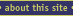
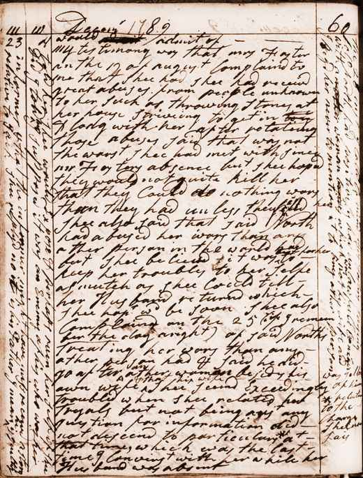

This is a static copy of the final website maintained by the Roy Rosenzweig Center for History and New Media.
 |
|
Using the Lens: Move the lens around the image to see the "magic" transcription of the handwritten diary page. You can change the size of the lens box with the buttons below it. This lens is designed to help you practice reading Martha's handwriting, the first step of dealing with any historical document. Historians wish transcription was always this easy! See also: Try Transcribing, and Decoding the Diary, the second and third steps of dealing with a historical document. |
Move the mouse or your finger over the page, or focus the page and use the arrow keys, to move the lens. Change its size with the buttons below or the + and - keys. Rotate the page with the rotate buttons or the R key.

Prefer plain text? Read the transcription of this diary page.
|
||||||||||||||||||